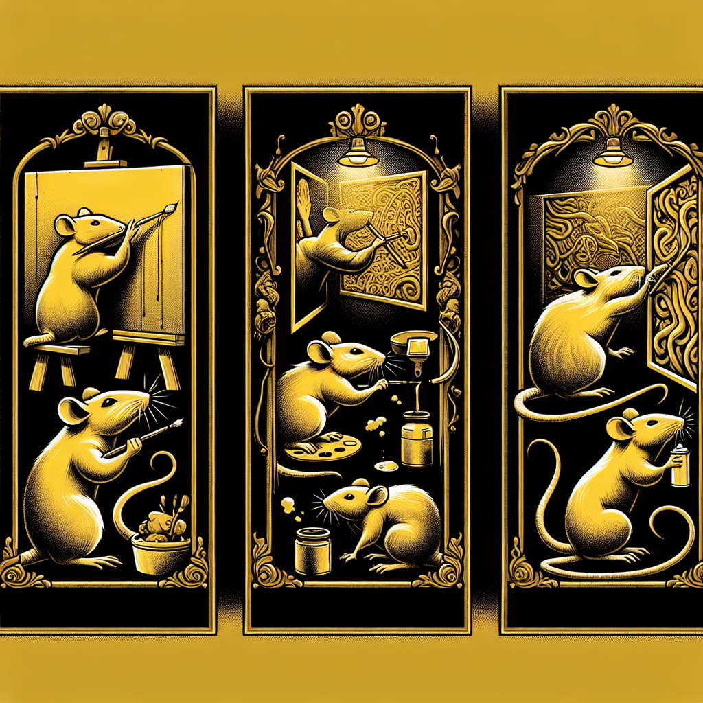

The Hidden Talent of Ratopolis: A Spotlight on Rat Artists
Ratopolis, a vibrant metropolis, thrives on the creativity of its residents. Among these, a group of talented artists captures the essence and spirit of rat society through their incredible works of art, portraying both everyday life and extraordinary tales.

The art scene in Ratopolis is a testament to the ingenuity and resilience of its citizens. As Mayor Whiskers proudly states, “Our city's art scene is a beacon of creativity and perseverance." Popular art districts and galleries are brimming with color and life, testament to recent exhibitions that have drawn significant crowds.
In the heart of this artistic dynamo are the artists themselves. Squeaky Da Vinci, a renowned painter, is famous for his intricate murals that tell the stories of Ratopolis. "Art is my way of narrating the untold stories of Ratopolis," says Squeaky, whose vivid depictions capture the soul of the city.
Then there's Whiskerella, a sculptor whose works are celebrated for their emotional depth and stunning detail. "Each sculpture is a piece of my soul, molded into form," she remarks, her eyes reflecting the passion that drives her creativity. Whiskerella draws inspiration from her grandmother, a pioneer in rat sculpture, shaping a legacy that resonates through every piece.
Brushy Tail, a young graffiti artist, is making waves with his bold street art. His creations adorn the walls of Ratopolis, bringing vibrancy and social commentary to public spaces. "Street art is the voice of the streets, raw and unfiltered," Brushy explains, highlighting the grassroots nature of his work.
Each artist's journey is unique yet interconnected by their shared struggles and triumphs. Squeaky Da Vinci's path to fame was riddled with challenges. "Every stroke of the brush is a battle against the odds," he acknowledges, reflecting the resilience required to succeed.
Whiskerella found her muse in familial ties, drawing strength and inspiration from her grandmother's work. Brushy Tail, once a troubled youth, transformed his life through art, offering hope and showcasing the transformative power of creativity.
Art in Ratopolis is not just aesthetic; it's a powerful medium for social change. Community murals tell the storied past and hopeful future of Ratopolis, fostering unity and community pride. "The murals in our neighborhood remind us of our history and inspire hope for the future," shares Nibbles, a local resident.
The future of Ratopolis art is promising, with emerging trends in digital art and virtual galleries. Local government and private patrons are increasingly supportive, ensuring the artists have the resources they need to thrive. "Investing in art is investing in the soul of our city," affirms Cheddar, a dedicated art patron.
Despite the evident richness of Ratopolis' art scene, some argue that in a bustling metropolis, resources might be better spent on essential services. However, the community believes the benefits of a thriving art scene—unity, pride, and social awareness—outweigh such concerns.
In every brushstroke and sculpture, one can find the heartbeat of Ratopolis. Art tells the story of a city that thrives on creativity and perseverance. We encourage all to visit local galleries and support our talented rat artists. Upcoming art events and exhibitions in Ratopolis promise to be inspiring.
Art is not just an accessory; it’s an essential part of our cultural heritage. Let’s continue to celebrate and nurture the hidden talents of Ratopolis, ensuring a legacy that will inspire generations to come.